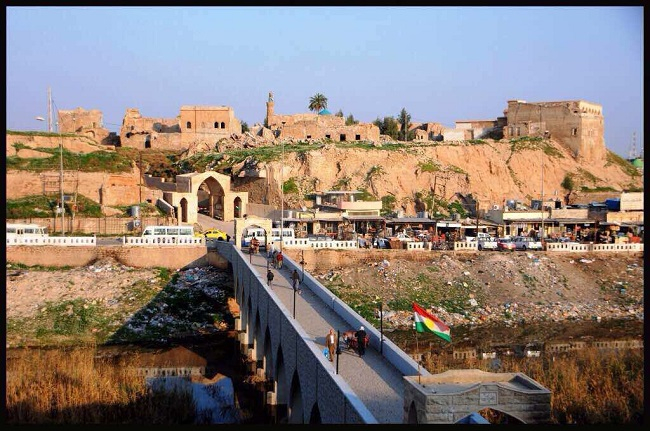

karkwk

Kirkuk was proclaimed the "capital of Iraqi culture" in 2010.[citation needed] It is described by the Kurdish leader and former Iraqi president Jalal Talabani as “the Jerusalem of Kurdistan”, while it is seen by the Turkmen activist Fatih Salah as the cultural and historical capital of Iraqi Turkmens.[9] The government of Iraq states that Kirkuk represents a small version of Iraq due to its diverse population, and that the city is a model for coexistence in the country